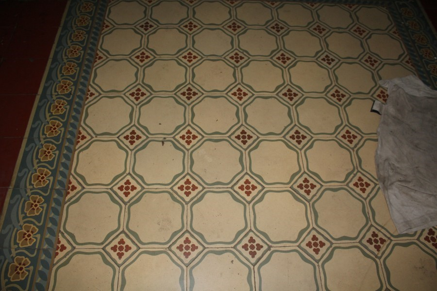
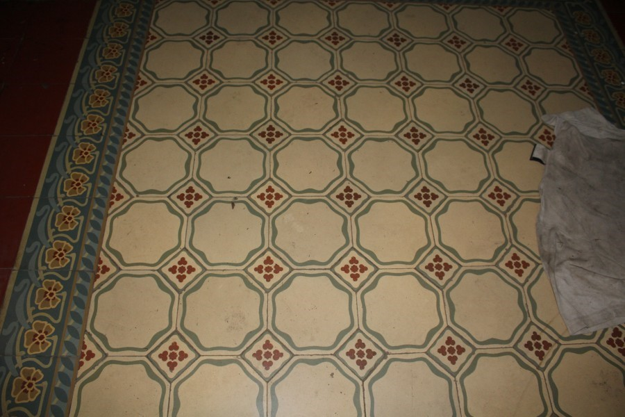

По случаю объeдиненения Крымского ханства с Российской империей Екатерина II издала манифест, в котором обещает мусульманам Крыма:
...Охранять и защищать их лица, храмы и природную веру, коей свободное отправление со всеми законными обрядами пребудет неприкосновенно и дозволить напоследок каждому из них состоянию все те правости и преимущества, каковыми таковые в России пользуются!».
« Естественно, что после таких заверений для каждого мусульманина служба Императору и Отечеству составляет гордость — это чувство было не чуждо и коренным мусульманам Крыма.
Так, 1 ноября 1783 года именным указом Екатерина II дозволяет принимать крымско- татарских мурз и чиновников Крыма на военную службу с присвоением им соответствующих званий. Именно в это время, впервые на законодательном уровне не только мусульмане Крыма, но и всей России получили
права воинской службы в офицерских чинах.
Указ от 22 февраля 1784 года вообще уравнял крымско-татарских мурз и князей в правах с российским дворянством.
Во времена правления Екатерины II потомок Юсуфа-мурзы князь Николай Борисович Юсупов, будучи крымцем, являлся главноуправляющим Оружейной палаты и Экспедиции кремлёвского строения, сенатором (с 1788), директором Императорских театров (1791–1796). Он возглавлял дворцовые стекольные, фарфоровые
и шпалерные заводы (c 1792), был действительным тайным советником (1796), директором Эрмитажа, министром Департамента уделов (1800–1816) и членом Государственного совета (с 1823). Один из последних и известных потомков Юсуфа-мурзы, князь Феликс Феликсович Юсупов, с согласия императора
России Николая II, 22 февраля 1914 года сочетался браком с княжной императорской крови Ириной Александровной и являлся мировым меценатом, самым богатым и одним из самых влиятельных людей России. В 1909–1912 годах, учась в Оксфордском университете, он основал Русское общество
в Великобритании, а в 1910-е годы возглавлял Первый русский автомобильный клуб, размещавшийся в доме первого Российского страхового общества.
Единственная дочь князя была замужем за графом Н.Д. Шереметевым.
Кстати, дворянство пророчило Юсупову Ф.Ф. престол императора России.
Быть может поэтому, в том же году из крымских татар формируется особое войско — Таврические национальные дивизионы, где все офицеры были назначены из молодых мурз.
Затем на основании указа, изданного Президентом Военной коллегии Российской Империи Князем Потёмкиным от 1 марта 1784 года за № 15936 «О составлении национального войска из новых подданных в Таврической области обитающих» в составе пяти дивизионов на первых порах, было
сформировано только три дивизиона.
По штату положено было в каждом дивизионе по 1-му майору, по 2 ротмистра, 2 поручика, 2 прапорщика, 10 наказных и 195 рядовых с жалованием в год: майору — 300 р., ротмистру — 200 р., поручику — 150 р., прапорщику —
120 р., наказному — 40 р. и рядовому — 35 р. ассигнациями.
Все офицеры и большинство наказных были назначены из молодых мурз выдающихся фамилий Крыма.
Из отчётов о содержании этих дивизионов видно, что командовал:
- 1-м дивизионом — ротмистр Мустафа мурза Киятов;
- 2-м дивизионом — майор Абдулла Величь;
- 3-м дивизионом — майор Батыр ага Тамагул Крымтайский, позже назначенный советником Таврической палаты уголовного суда.

Первоначальный флаг Крымско-татарского полка

Конвой со стягом полка
Так, в конце 1784 года мурзы, собравшись в Бахчисарае для обсуждения вопросов, связанных с предстоящим Высочайшим приездом и назначения для этого лошадей, решили представить через правителя области Василия Васильевича Каховского князю Потёмкину выражения радостных чувств своих и всего татарского населения
Тавриды по случаю прибытия Императрицы в Крым. Тут же знатнейшие представители татарского населения Крыма выразили обязательство приготовить 3000 лошадей из городов и деревень для Высочайшего шествия, а также принять участие людьми в исправлении дорог.
В конце декабря 1786 года князь Потемкин прибыл в Тавриду. Его встретили в Херсоне секунд-майоры Велиша мурза Киятов и Азамат ага, а в Перекопе — коллежские советники Темир ага, Мегмет ага, Мегмет-ша Ширинский, Атай мурза Ширинский.
Все они вместе с князем проехали по всему пути, предназначенному для Высочайшего шествия. В конце января 1787 года князь Потёмкин выехал из Крыма в Кременчуг, а 9 марта выехали из Карасубазара в Киев выбранные от дворянства депутаты: Темир ага, Абдувели ага (предводитель дворянства
Симферопольского уезда), Меметша мурза Аргинский, коллежский асессор Юсуф Ибраимович (переводчик) и дворянский секретарь Гусеин мурза Ширинский - для приветствия Её Величества с приездом на юг.
По результатам указанных встреч (и для встречи Императрицы), в январе 1787 года были произведены в Крыму первые дворянские выборы, на которые съехалось со всего Крыма до ста мурз и закрытыми шарами были избраны уездные предводители дворянства, судей и исправников. Все места депутатов,
заседателей как дворянских опек, так и верхних и нижних земских судов, были замещены молодыми мурзами из числа крымцев с чинами.
Во время же приезда в Крым в мае 1787 года императрицы Екатерины II все три дивизиона участвовали в торжественном шествии Её Величества по Крыму, вновь обмундированные перед самым приездом в чекмени и шаровары из черного сукна и с новой амуницией.
Известно, что в 15 вёрстах от Бахчисарая встретили императорский кортеж в богатых расшитых национальных костюмах верхами молодые мурзы и беи Крыма, о чём Императрица в своем письме к учёному Гримму пишет:
«Всю дорогу нас конвоировали татары, а в нескольких вёрстах от Бахчисарая Мы нашли всё, что есть лучшего в Крыму, на коне. Картина была великолепная. Предшествуемые таким образом, в открытой коляске, в которой сидело 8 персон, Мы въехали в Бахчисарай в 6 ч.
Вечера».
В конце 1787 года ввиду перестановок в Армии командиром 1-го дивизиона был назначен, майор Мегметша-бей Кантакузин, кавалер ордена Святого Владимира 3-ей степени, (получивший эту редкостную для майора награду, при взятии крепости Очаков в звании адъютанта князя Потёмкина!), позже был первым смотрителем
Симферопольского конского завода.
До 1790 года эти два дивизиона отправляли службу внутри Крыма, сопровождали почту, представителей властей, охраняли леса, соляные озера, преследовали беглых, разбойников и развозили эстафеты между городами и сёлами Крыма.
Ввиду большого объёма работы и фактической службы крымцев, как в вооружённых силах, так и по внутренних делах, в 1790 году, сформировано было из крымских татар ещё 4 дивизиона, и все эти 7 дивизионов под общей командой полковника Мегметша-бея князя Кантакузина были отправлены
к польской границе с выдачей им от казны амуниции и лошадей.
В Черниговском наместничестве, они были остановлены и поступили в корпус генерал- аншефа Кречетникова.
Пробыв там более двух лет, в 1792 году они были возвращены обратно в Крым. Службой их начальство оставалось довольно и находило полезной для края, но всё-таки со смертью Екатерины Великой в 1796 году часть дивизионов была расформирована.
С началом войны с французами в конце 1806 года все мусульманское население Крыма во главе со своим муфтием Муртаза Челеби и мурзами, прошением на Высочайшее Имя Императора заявило о желании выставить нужное число конных полков на всем своём иждивении для защиты Отечества.

Группа чинов Крымско-татарского эскадрона. Картина работы А.И. Гебенса
Император Александр I, милостиво приняв такую просьбу, Высочайше повелел разработать этот проект и сформировать четыре конных полка из крымских татар по образцу казачьих полков, но проекте было предположено о назначении командиров Высочайшей властью из числа русских. Но хорошо знакомый
с населением края Таврический губернатор Дмитрий Борисович Мертваго в своём мнении указал на неудобство во время войны незнание командиром языка вверенных ему людей и на то недоверие, с которым отнесутся люди к неизвестному лицу, справедливо полагая, что при их жертвовании людьми
и лошадьми, уходящим далеко от Родины, необходимы свои начальники, тем более что в настоящее время из мурз Крыма есть много воспитанных и достойных офицеров занять эти места. Он возбудил особое ходатайство для пользы дела назначить всех командиров и офицеров — непременно из мурз
крымских татар.
Такое ходатайство Д.Б. Мертваго отправил в Одессу исполняющему должность Херсонского военного губернатора маркизу де Траверсе с молодым поручиком Мустафа Мурзой, которого, в свою очередь, маркиз де Траверсе с теми же бумагами отправил в С.-Петербург к министру военно-сухопутных сил
генерал-адъютанту Феншау.
Министр внимательно отнёсся к делу, а молодого офицера лично представил Государю. Его Величество, милостиво расспросив его о Крыме, говорил о проектируемых полках и при прощании высказал, что он рассчитывает на их полезную службу отечеству. С утверждённым проектом Мустафа Мурза прискакал
в Одессу и оттуда в Крым. Мурзы и все население Крыма под наблюдением Д. Б. Мертваго и Херсонского губернатора Дюка де Ришелье усиленно принялись за формирование и снаряжение четырёх конных татарских полков по казачьему образцу, так что в мае 1807 года эти полки были совершенно
готовы к выступлению — все люди были одеты в чёрные суконные чекмени и шаровары по казачьему образцу и в татарских национальных шапках, вооружены были частью вполне, то есть имели пики, пистолеты, ружья и сабли, а частью имели только кулюки и татарские ножи.
Херсонский генерал-губернатор в своих рапортах к министру военно-сухопутных сил от 12 и 31 августа 1807 года доносил, что, «находясь по июнь месяц в Крыму», он «усиленно был занят, как бы лучше устроить татарское сие войско магометанского закона, обывателями Крыма
добровольно представленное». Побуждаемый желаниями татар, «людьми из себя и лошадьми жертвовавших», он находил нужным согласиться и в том, «чтобы и из их имянитейших фамилий назначены были в полки сии офицеры».
Продолжение следует...


 
